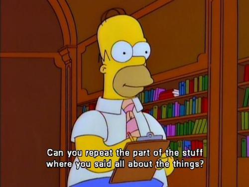

Flipping the University Mathematics Classroom
A Gateway to Lifelong Learning
Robert Talbert, Grand Valley State University / @RobertTalbert / +RobertTalbert
Workshop on Innovations in University Mathematics Teaching
Cardiff University School of Mathematics, 7 July 2014

Overview
Flipped learning and the flipped classroom
The benefits of flipped learning
Flipped learning in calculus
Lessons learned from flipping
Flipped learning and the flipped classroom
Traditional Learning Design
Group space = Listening, telling, transcribing

Traditional Learning Design
Individual space = Application, analysis, assimilation

Flipped Learning Design
Listening, transcribing + practice ⇨ Individual space pre-class
Flipped Learning Design
Group space ⇨ Interacting, applying, creating + guidance

Flipped learning
Flipped learning is a pedagogical approach in which direct instruction moves from the group space to the individual learning space, and the resulting group space is transformed into a dynamic, interactive learning environment where the educator guides students as they apply concepts and engage creatively in the subject matter.
What flipped learning is not
Videos before class and homework in class
Videos before class, instructor takes a break during class
Moving lecture out of class to make room for more lecture
The flipped classroom (necessarily)
Flipped learning presupposes dynamic, interactive, engaged learning with instructor guidance, focused on application and creative use of basic concepts during group meeting times.
Flipped learning enables
more time in the classroom for deep exploration
more F2F contact between prof and students
more responsibility-taking by students
intentional practice with self-regulated learning
Self-Regulated Learning
Four criteria for SRL:- Learners are active participants in learning process and construct their own meanings
- Learners have the potential to monitor aspects of the learning process
- Learners have a standard against which to compare learning processes and make realistic decisions about the adequacy of their learning
- Learners use self-regulating activities to mediate between personal characteristics and performance
Flipped learning in Calculus
MTH 201 (Calculus), Fall 2013 at Grand Valley State University
We flipped calculus because
Beginning of term
Put flipped learning and SRL as prominent goals in the syllabus
Choose a good textbook -- or don't use one
Create or curate additional learning resources
Day 1: Spend significant time explaining the course setup and fielding questions